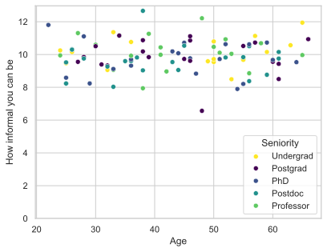
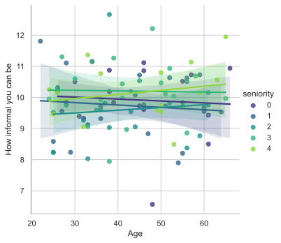

%config InlineBackend.figure_formats = ['svg']
from IPython.display import display, Markdown
import matplotlib.pyplot as plt
import seaborn as sns
sns.set()
sns.set_style("whitegrid")
import random
import numpy as np
import pandas as pd
random_seed = 5Workplace interaction
Import some plotting libraries and set some defaults:
danish_people = ['Julie', 'Sofie', 'Sara', 'Cecilie', 'Emma', 'Caroline', 'Laura', 'Mathilde', 'Katrine', 'Anna', 'Emilie', 'Ida', 'Freja', 'Maria', 'Amalie', 'Camilla', 'Louise', 'Signe', 'Maja', 'Josefine', 'Line', 'Nanna', 'Anne', 'Nicoline', 'Clara', 'Victoria', 'Marie', 'Natasja', 'Lærke', 'Alberte', 'Frederikke', 'Rebecca', 'Mette', 'Rikke', 'Amanda', 'Mia', 'Kristine', 'Johanne', 'Stine', 'Simone', 'Isabella', 'Jasmin', 'Michelle', 'Pernille', 'Christina', 'Astrid', 'Sille', 'Thea', 'Mie', 'Nadia', 'Mathias','Mads','Mikkel','Rasmus','Emil','Oliver','Frederik','Christian','Nicolai','Jonas','Jacob','Kasper','Magnus','Andreas','Tobias','Simon','Lucas','Marcus', 'Victor', 'Nicklas', 'Sebastian', 'Daniel', 'Alexander', 'Anders', 'Christoffer', 'Patrick', 'Lasse', 'Benjamin', 'Thomas', 'Martin', 'Jeppe', 'Gustav', 'Peter', 'Philip', 'William', 'Oscar', 'Malthe', 'Jonathan', 'Anton', 'Morten', 'Carl', 'Søren', 'Mohammad', 'Mark', 'Jens', 'Jesper', 'David', 'Asger', 'Michael', 'Johan']
nr_danes = len(danish_people)Sampling
I sampled 100 danaes from workplaces in Denmark. More about the sampling… blah, blah, blah, blah, blah, blah, blah, blah, blah, blah, blah, blah, blah, blah, blah, blah, blah, blah, blah, blah, blah, blah, blah, blah, blah, blah, blah, blah,
Workplace individuals were interviewed by …. blah, blah, blah, blah, blah, blah, blah, blah, blah, blah, blah, blah, blah, blah, blah, blah, blah, blah, blah, blah, blah, blah, blah, blah, blah, blah, blah, blah,
df = pd.DataFrame({'name': danish_people,
'seniority': np.random.randint(0, 5, len(danish_people)),
'age': np.random.randint(22, 67, len(danish_people))})
df['informality'] = np.random.normal(loc=10, scale=1, size=len(danish_people))
df| name | seniority | age | informality | |
|---|---|---|---|---|
| 0 | Julie | 4 | 32 | 9.058813 |
| 1 | Sofie | 0 | 66 | 10.935441 |
| 2 | Sara | 2 | 55 | 9.716871 |
| 3 | Cecilie | 3 | 34 | 11.144905 |
| 4 | Emma | 1 | 54 | 7.898643 |
| ... | ... | ... | ... | ... |
| 95 | Jesper | 3 | 38 | 7.942776 |
| 96 | David | 3 | 36 | 9.924945 |
| 97 | Asger | 0 | 39 | 9.842173 |
| 98 | Michael | 1 | 44 | 10.075713 |
| 99 | Johan | 2 | 25 | 8.232970 |
100 rows × 4 columns
sns.scatterplot(x='age', y='informality', data=df, hue='seniority', palette='viridis')
plt.ylabel('How informal you can be')
plt.xlabel('Age')
plt.legend(title='Seniority', loc='lower right', labels=['Undergrad', 'Postgrad', 'PhD', 'Postdoc', 'Professor'])
plt.ylim(bottom=0) ;

Seems Danish people act very informally unaffected by age and seniority.
informality_age_cor = df.informality.corr(df.age)
informality_age_cor0.0351023049128157informality_seniority_cor = df.informality.corr(df.seniority)
informality_seniority_cor0.12226864913588426The correlation between informality and age was 0.035 and the correlation between informality and seniority was 0.122.
sns.lmplot(x='age', y='informality', data=df, hue='seniority', palette='viridis')
plt.ylabel('How informal you can be')
plt.xlabel('Age') ;
